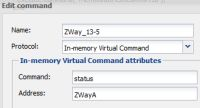
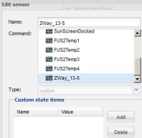

May 29, 2014
Marcus Redeker says:This is used by the console to send an action to the controller. Maybe if you use a virtual command and rules to take the received command to update a sensor this could be a workaround.
In this discussion it became apparant that the REST API is not meant as a communication path for smart autonomous devices like Raspberry Pi, Vera, Arduino, and the like.
In my case the RaZberry Z-Wave controller is used. This controller can send update messages to an other intelligent agent.
As in one of the many discussions UDPListener was mentioned as a good route, I wrote some provisional small modules on the Razberry side, that send (sensorname,value)-pairs to OpenRemote. That part is functioning now for two devices.
Ideally UDPListener could process these pairs directly. I understand that there is an experimental version that processes multiple predefined sensors to which a list of values is sent. That would not work well in this case where data is coming in in unpredictable order.
I am realistic enough to know that it will take time (if ever) before handling pairs wil be implemented. So as Marcus stated I should revert to Drools and virtual commands.
Has anyone out there tried such a thing? Can only virtual status commands be updated from rules? I vaguely remember that plain custom sensors could be written to, but not to sensors of type switch?
{kind=link}
{kind=link}
|
Rules cannot set sensors, they can only execute commands. Sensors are linked to commands, not commands to sensors, i.e. sensor can execute a command to read something but command cannot kick a sensor. The only workaround is through in-memory variable, one command can write to it and another command instance (linked to a sensor) can read it. Linked sensor can be any sensor, custom, switch, level, etc. Does not matter, as long as written value corresponds to the sensor type. As custom command is the most flexible, it accepts everything written, I use only them. The other type of sensors I don't need. What you can do in your UDP listener is receive (command, value) pair. If this command would write to in-memory variable and some sensor would read it then you are OK. For, me as I frequently use the same name for commands and sensors which use them, this indeed would mean ("sensor", value), but only because the command would have the same name as sensor. Communication though would go through the in-memory var anyway. |
|
Michal, thanks for this confirmation. I was confused by some posts suggesting one could write from within a rule to a sensor of type custom. |
This is why I use the same names for commands and sensors and some naming conventions. Look at my example of variables persistence: http://mqlservice.net/openremote/2014/09/16/persistent-in-memory-variables/ rule "Store values" timer(int: 1s) when Event($s:source matches "^GV.*", $v:value!="status") then _WriteToFile($s, $v); end You see that every sensor which name begins with GV is written to the file. The same you can do for your ras, for example: when Event($s: source matches "^RAS.*", $v: value!="status") then execute.command($s, $v.toString()); end It will work for e.g. "RAStemperature", "RASrain", etc, but not for "temperature" or "rain". |
|
Thanks, that looks quite doable. On further thinking I came to the conclusion that for the slowly changing sensors like battery status for the time being I better continue to rely on polling from OR |
|
 Looks as if I don't get anything in my imVC's package org.openremote.controller.protocol.preserve; import java.io.*; import org.openremote.controller.protocol.Event; global org.openremote.controller.statuscache.CommandFacade execute; rule "Store values" timer(int: 1s) when Event($s: source matches "^ZWay.*", $v: value!="status") then execute.command($s, $v.toString()); end Sofar haven't seen anything remarkable in the logs either. |
|
You don't need the rule from my example but a rule for parsing the string from UDP messages. Suppose you have the UDP listener sensor "UDPlistenerSensor" Then the rule for your in-memory sensor would be: rule "UDP listener" when Event(source=="UDPlistenerSensor", $v: value!="") then java.util.regex.Pattern regexPattern = java.util.regex.Pattern.compile("\\(?(ZWay.*),([\\d\\.]+)\\)?"); java.util.regex.Matcher matcher = regexPattern.matcher($v.toString()); if (matcher.find()) { execute.command(matcher.group(1), matcher.group(2)); } end |
|
Michal, thank for this. During the night I suddenly realised that I did not make use of the sensor for UDPListener. http://raspberry:8083/OpenRemote/SwitchBinaryStatus/21/0 "on" In my OpenRemote http call I do use RegEx on|off to get rid of the quotes. This call is based on the same status value as used in the UDP send part for RaZberry.
zway.devices[21].instances[0].SwitchBinary.data.level.bind(function()
{
var status = (zway.devices[21].SwitchBinary.data.level.value) ? "on" : "off";
system("/opt/z-way-server/automation/storage/status.sh", "ZWay_21," + status ) ;
} );
So I have to do a bit more digging. Latest UDPListener.drl package org.openremote.controller.protocol.preserve; import java.util.*; import org.openremote.controller.protocol.Event; global org.openremote.controller.statuscache.CommandFacade execute; rule "UDPListener" timer(int: 1s) when Event(source=="RaZ-UDP-Status", $v: value!="") then java.util.regex.Pattern regexPattern = java.util.regex.Pattern.compile("\\(?(ZWay.*),([\\d\\.]+)\\)?"); java.util.regex.Matcher matcher = regexPattern.matcher($v.toString()); if (matcher.find()) { execute.command(matcher.group(1), matcher.group(2)); } end |
|
This is because my regex filters on numbers, the second group is (\\d\\.+), which means any digit or dot. You probably want (\\d\\.+|on|off) or even (.+) - but the last one is dangerous as it can catch any rubbish. Probably you would like to test your regex on regexplanet.com before putting it in the rule. This way you know that it is matching what you want. By the way, you don't really need timer() delay here. I've used it in the store values rule as I want to avoid my HDD burn when the sensor goes crazy and becomes oscillating, which is quite possible in some cases. |
You probably want (\\d\\.+|on|off) Great it works now By the way, you don't really need timer() delay here I deliberatly left it in, since I did not want the system hang in this experimental phase. I must remove it later, as I quess I may loose events |
|
Do you mind if I also publish this code on the RaZberry site? UDPListener.drl // Code provide by Michal Rutka package org.openremote.controller.protocol.preserve; import java.util.*; import org.openremote.controller.protocol.Event; global org.openremote.controller.statuscache.CommandFacade execute; rule "UDPListener" when Event(source=="RaZ-UDP-Status", $v: value!="") then java.util.regex.Pattern regexPattern = java.util.regex.Pattern.compile("\\(?(ZWay.*),([\\d\\.+|on|off]+)\\)?"); java.util.regex.Matcher matcher = regexPattern.matcher($v.toString()); if (matcher.find()) { execute.command(matcher.group(1), matcher.group(2)); } end |
Not at all, please do. BTW, it can be in standard package a bit shorter: // Code provide by Michal Rutka package org.openremote.controller.protocol; global org.openremote.controller.statuscache.CommandFacade execute; rule "UDPListener" when Event(source=="RaZ-UDP-Status", $v: value!="") then java.util.regex.Pattern regexPattern = java.util.regex.Pattern.compile("\\(?(ZWay.*),([\\d\\.+|on|off]+)\\)?"); java.util.regex.Matcher matcher = regexPattern.matcher($v.toString()); if (matcher.find()) { execute.command(matcher.group(1), matcher.group(2)); } end |
|
I have prepared a HowTo for this. |
|
I followed the HOW TO. [2015-06-09 19:46:39.329] I core Executing script: /*** CustomUserCodeLoader ZAutomation module **************************************** ... why is sockets not defined? is this an error in the custom script? |
|
Which Z-Way version do you use? You need at least v2.0.1-rc33. (Just added that requirement to the HowTo). |
|
Thank you, updating the firmware to version v2.0.1-rc33 took away my error. |
|
On March 25, I have submitted feature request ORCJAVA-467 on the Jira. In essence it asks for an additional feature in UDPListener, to overcome the necessity to use the DROOLS rule discussed in this thread. I do think it not only fits my requirements, but is a generic extension useful for e.g. arduino like smart devices. I do understand the development capacity constraints of the openremote organisation, but I do find it disturbing that there is no response in terms of desirability, technical feasibility, for the adaptation I suggested. Neither on this forum nor on the Jira. If there is no interest, it is better delete the issue, or explicitly give it a status that is not considered for implementation, than clog the Jira further with long forgotten "open" issues. |
|
I think that the main reason this is not answered yet is a reason that it is not a trivial thing to do. Does not fit in the current architecture of the controller. Mind, that doing this through UPD listener, in order to get it working you need to add virtual commands and sensors linked to this command. The rule is just a small addition and in fact it can be made very general and written into separate DRL file, so a user might even not be aware of it. What the real problem would be is to create virtual commands and sensors on a fly based on UDP listener reception. Currently adding commands and sensors requires controller restart, you wouldn't like this when UDP listener receives a new (sensor, value) pair - either on purpose or error. Moreover, what to do if received (sensor, value) pair interfere with existing sensors in the design? This can create very hard to trace bugs. Many people are not eager to say no - therefore, I think, there is no reply from the core team. On the other hand, this would be a nice feature if it fits into design. Maybe, when a major redesign work will be considered, this is one item which can be included from the start. That is why it shouldn't be just deleted from Jira. |
|
@Pieter: I hadn't see your issue in the JIRA (did not have notifications turned on for new issues, only reviewed from time to time) but it does make sense to create the issues in JIRA and don't delete them. We still do review them from time to time, do searches in the JIRA to check if something similar was reported in the past, ... I haven't looked in detail at this but I think Michal is right in his answers. You would still need to create commands/sensors for each individual name in the designer in order to be able to link them to UI elements (if you did not intend to link to UI elements, then I guess you would use in rules, that would certainly be more complex to write than the rule that takes the UDP payload and stores it in a virtual command sensor). If you define the format of your payload and use some naming conventions, you could achieve what you want with a single rule that would parse the payload and execute the appropriate virtual command (but again you would have created the commands/sensors manually in the designer). Dynamic creation of sensors in the controller is something we discussed internally for some project, but the work required to implement that correctly was too big at the time. However, we see that as a valid requirement for certain use cases and we'll take that into account in the roadmap. |
|
@Michal
We can do that right now as I have shown in my applications.
That is what I have done. I have no other rules in Drools anymore since its behaviour is not always predictable, and I feared it would interfere with the Drools UDP handler you wrote for me.
This is just a matter of mindset. If you consider OpenRemote as the Integration and Visualisation almighty platform that controls everything, I do agree. However, the question is if OR has to police everything, or if you can leave things to peer controllers. At this moment I already can do many bad things with UDPListener. So there is no protection whatsoever already. Therefor the responsibility must be (partially) with the integrator (me in this case). I am happy to take that responsibility. Development of protocols for devices like Z-Wave have proven to be very time consuming. That is why I did choose Z-Way as my peer Z-Wave controller. To ease that integration task, and to further enforce naming consistency between "peers", I would highly welcome a standard XML import format for devices. Could initially be restricted to In Memory Virtual devices. The XML creation task is relatively easy with Zway. As a matter of fact import is my top priority, far beyond this UPDListener issue.
For me complexity never is a reason not to discuss. From what I have seen, I think I may say that UDPListener is very much unfinished business. Public documentation is lacking, and some functionality sits half? tested in a snapshot. So at least some public assessment would be welcome
Given the activities in the last two years or so, and the lack of public shared visions, I don't think it is realistic to expect a major redesign. |
|
@Eric |
{kind=link}
{kind=link}